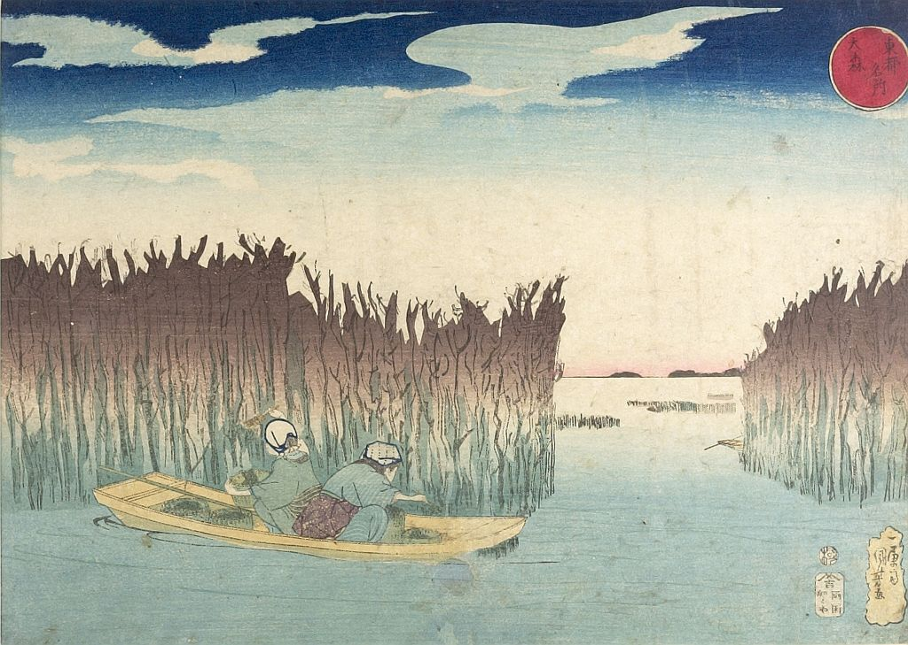

Spotlight Viewer
Spotlight Viewerby Dominic Ferrante Jr. on 2014-03-15 16:27:22 UTC
While in Florence this past summer, I had the privilege of attending the exhibition entitled “La Primavera Del Rinascimento: La Scultura E Le Arti A Firenze 1400-1640” at Palazzo Strozzi on a number of occasions. On my first visit, and coincidently in the first room of the exhibition, I came to what was for me a very significant realization. Standing in front the bronze panel submitted by Filippo Brunelleschi in the competition for the commission of the Baptistery Doors, my gaze wandered beyond the work and landed on a small copy of a Roman sculpture depicting the 'spinario.' It was in this moment, seeing the spinario sculpture juxtaposed with the miniature thorn-puller depicted in the lower left of Brunelleschi’s panel, that I realized that the highest achievement of any museum exhibition is its ability to teach a viewer about a work of art through the other works set in relation to it in a gallery space. In developing my set of criteria for a collection of homeless paintings, I had this realization in mind. I began to consider in what ways works of art could be productively combined and arranged such that one could learn about individual pieces through comparison with those around them. What I ultimately landed on was developing a family tree of masters and disciples, both of names (http://imgur.com/vlcembC) and images (http://imgur.com/PiiKOqf). By arranging and comparing the works found in the Homeless Paintings Collection that are attributed to these artists, one may learn about the relationships between the paintings and possibly even trace the inheritance of certain features through a lineage of masters and disciples. The way I constructed my genealogy of masters and disciples was by reading in Vasari's 1568 edition of "Le vite de' più eccellenti pittori, scultori e architettori." Beginning with a pair of master and disciple already familiar to me, Cimabue and Giotto, I traced a lineage that was five generations long and included sixteen artists by reading a series of the individual Lives. Having gathered the names of these masters and disciples, I then searched through the collection of Homeless Paintings for any and all works attributed to these artists. Not surprisingly, a majority of the works depicted the Virgin and Child, but in some cases the only works represented in the collection attributed directly to these artists had other subjects; I attempted to provide strictly examples of depictions of the Virgin and Child in my family tree in order to allow for comparisons between artists and across generations. When I could not find any works directly attributed to these artists, I used examples that were designated as from the school of these artists, copies of these artist’s works, or that were once attributed to these artists by Berenson when available. Ultimately, there were four artists for which there were no related works at all. After compiling all of the images, I printed and arranged them into a family tree structure. Neither of the works included in the family tree for Cimabue are attributed directly to him; one is “Near Cimabue” (see figure 0) and the other has an annotation reading “Formerly exhibited in Boston MFA “Cimabue” (see figure 1) (see figure 2). Of the works provided for Giotto, one is attributed to him directly (see figure 3) and the other is a copy after Giotto (see figure 4). The two works for Taddeo Gaddi are (see figure 5) and (see figure 6). Because there were no works attributed directly to him in the Homeless Paintings Collections, of the paintings chosen for Giovanni da Milano, one is from his school (see figure 7) and the other was attributed to him by Berenson (see figure 8) (see figure 9). The paintings for Pietro Lorenzetti are (see figure 10) (see figure 11) (see figure 12) (see figure 13), and there were no examples of paintings by or related to his disciple Bartolomeo Bolognini. The example for Pietro Cavallini comes from his school (see figure 14), and there are no examples of paintings by or related to his disciple Giovanni da Pistoia in Berenson’s collection. There are also no examples of works for Stefano Fiorentino, but there is one work for Giottino (see figure 15) and several for his subsequent disciples. The painting provided for Giovanni Toscani (see figure 16) is attributed to a follower of Giotto, but Giovanni Toscani is provided as an alternate attribution on the annotations for the photo (see figure 17). There are five works attributed directly to Domenico di Michelino (see figure 18) (see figure 19) (see figure 20) (see figure 21) (see figure 22), nine to Giovanni dal Ponte (see figure 23) (see figure 24) (see figure 25) (see figure 26) (see figure 27) (see figure 28) (see figure 29) (see figure 30) (see figure 31), and no examples of works by Lippo Pittore. The last disciple of Giotto, Simone Martini has one work attributed directly to him in the collection (see figure 32). The brother-in-law of Simone Martini (not his disciple but his assistant), Lipo Memmi, also has one work attributed to him in the collection (see figure 33). Because there were so few works in the Homeless Paintings Collection that were directly attributed to the artists included in my family tree, it was often difficult to trace inheritances and specific influences of masters on disciples. Despite this, one set of images that was particularly fruitful to compare was Giotto’s "Madonna and Child Enthroned with saints and allegorical figures," Taddeo Gaddi’s "Madonna and Child Enthroned with four saints; Annunciation; Nativity; Crucifixion," and the School of Pietro Cavallini’s "Madonna and Child Enthroned with Saint John the Baptist, a deacon saint and four angels; Flagellation; Crucifixion; Entombment; the Three Maries at the Tomb." There is a striking resemblance in the triangular apex and the polygonal base of the thrones found in the panels by Giotto (see figure 3) and Taddeo Gaddi (see figure 5). The panel attributed to the School of Pietro Cavallini seems to also have been influenced by Giotto’s representation of the Virgin's throne, again particularly in the base (see figure 14). This resemblance may be regarded as evidence of artistic inheritance from masters. But as one gets further down the family tree, it becomes more difficult to relate the works back to the earliest masters. This is only exacerbated by the fact that there are a number of ‘missing links’ in this family, due to the limits of the collection. One feature that does seem to get passed down is the relatively small size of figures accompanying the Madonna and Child. The first instance of this in the family tree is again in Giotto’s "Madonna and Child Enthroned with saints and allegorical figures" (see figure 3). This feature reappears in both Domenico di Michelino’s "Madonna and Child with St. John the Baptist and St. Lawrence" (see figure 20) "Madonna and Child with St. John the Baptist and two angels" (see figure 21), as well as in both Giovanni dal Ponte’s "Madonna and Child Enthroned with St. Anthony, St. James the Greater and two angels" (see figure 26) and "Madonna and Child Enthroned with St. Anthony, St. John the Baptist, St. Andrew and St. Nicholas; Annunciation" (see figure 30). Grouping works together by artist and examining the similarities between them also seems to provide some insight into Berenson’s process of attribution. In particular, in Domenico di Michelino’s depictions of the Madonna and Child (see figure 18) (see figure 19) (see figure 20) (see figure 21) (see figure 22) what seems to unify these works (even more than the similarities in the dispositions and faces of the figures) is the presence of the fruit in the hand of the Christ child. In some ways, performing this search for works and constructing a lineage of masters and disciples was as revealing about the Curarium platform as it was about the art itself. When performing searches to locate works painted by particular artists, I had to sift through a number of images to find those that were tagged with specifically with the names of the artist I was looking for. Often times, searches would return with photographs that were tagged with names such as “School of X,” “Follower of X,” “Imitator of X,” “Copy of X,” and “Near X.” This raised a number of questions for me: what do the differences between these designations mean? Are they significant differences? Do these designations derive strictly from the annotations on the photographs or from other sources as well? Could some of these designations later be consolidated to have more uniformity in the tags for the collection? Similarly, while most of the tags for artist’s names are structured “First Name, Last Name,” some are structured “Last Name, First Name.” For example, when searching for paintings by Taddeo Gaddi, 5 records are returned when one searches “Gaddi, Taddeo,” whereas 0 records are returned when one searches “Taddeo Gaddi.” By contrast, searching “Giovanni dal Ponte” returns 24 records, whereas searches for “dal Ponte, Giovanni” or “Ponte, Giovanni dal” returns 0. This seems to indicate that there is no universal standard for how artist’s names are rendered in the tags for the collection. This made it significantly more difficult to perform the searches, especially when searching for works attributed directly to the artists rather than to their school, a follower, etc. I think it would ultimately be worthwhile to consider standardizing the way in which artist’s names are rendered in the tags on Curarium for this and future collections.
reference title
